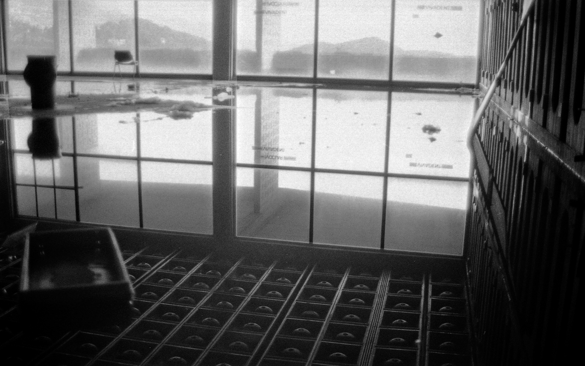
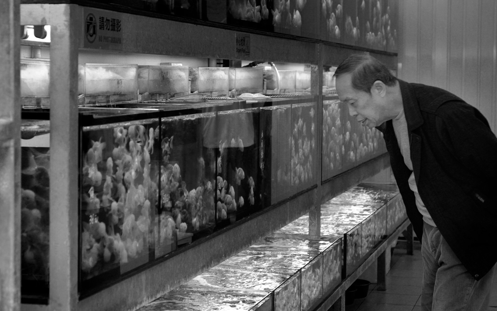
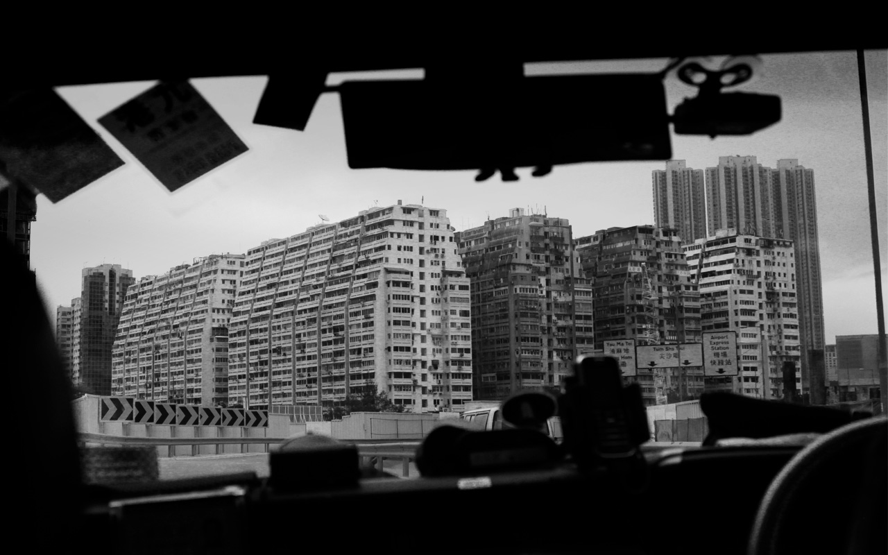
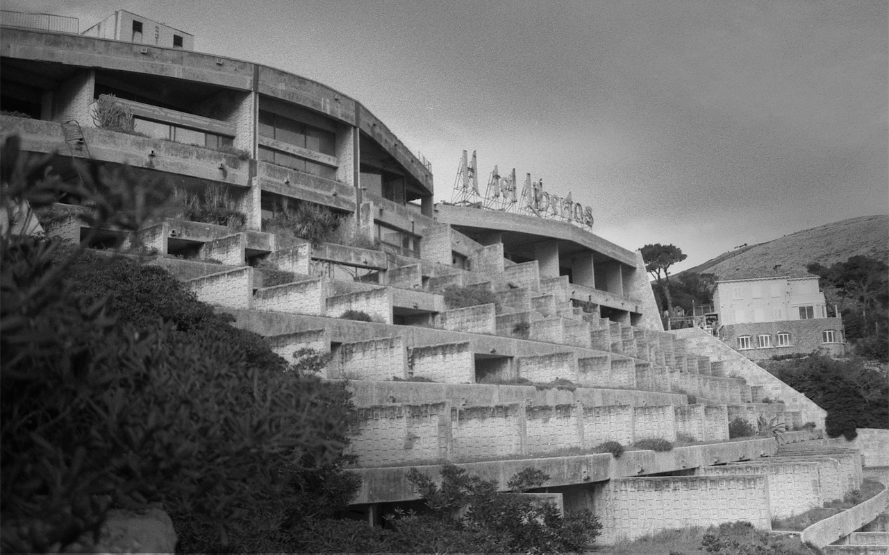
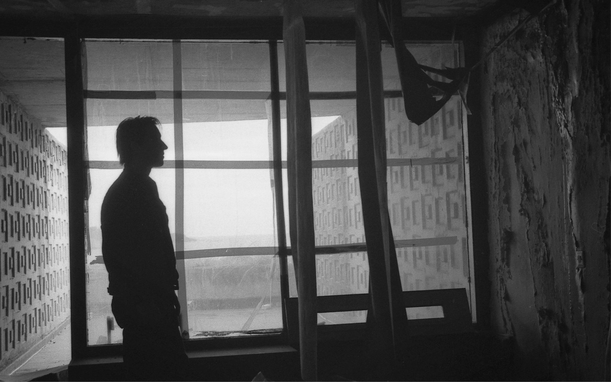
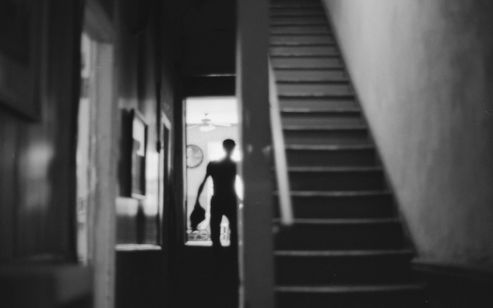

04 — Bilder
Fotografie
Mit der Fotografie hat alles angefangen. Lange bevor ich eine Filmkamera in der Hand hielt, war es die Fotografie, die mich gelehrt hat, hinzuschauen – wirklich hinzuschauen. Momente einzufangen, die sonst einfach verschwinden würden. Ein Blick, ein Licht, eine Stimmung, die sich in Sekundenbruchteilen verändert und nie mehr wiederkehrt.
Die Kamera ist für mich mehr als ein technisches Gerät – sie ist ein Grund, innezuhalten und den Moment wirklich wahrzunehmen. Lange habe ich Schwarz-Weiß-Filme selbst entwickelt und im Labor vergrößert. Diese Langsamkeit und Sorgfalt im Umgang mit Bildern hat meine Arbeit bis heute geprägt.






